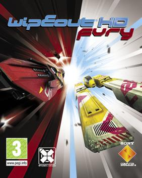

Credits (19 credits on 16 games)
Programming/Engineering
- Total War: Warhammer III (2022, Windows) Senior Platform Software Engineer in Test
- A Total War Saga: Troy (2020, Windows) Senior Platform Software Engineer in Test
- Alien: Isolation (2014, Windows) Programming
- Resident Evil: Operation Raccoon City (2012, Windows) Network Engineers
- Resident Evil: Operation Raccoon City (2012, Xbox 360) Network Engineers
- Resident Evil: Operation Raccoon City (2012, PlayStation 3) Network Engineers
- WipEout Pulse (2009, PlayStation 2) Multiplayer Lead Programmer
- WipEout HD (2008, PlayStation 3) Multiplayer Programmers
- WipEout Pulse (2007, PSP) Multiplayer Lead Programmer
- Formula 1: Championship Edition (2007, PlayStation 3) Programming Team
- Formula One 06 (2006, PlayStation 2) Programming Team
- Formula One 05 (2005, PlayStation 2) Programming Team
- Formula One 04 (2004, PlayStation 2) Programming Team
- WipEout Fusion (2002, PlayStation 2) Programmers
- FIFA 2001: Major League Soccer (2000, PlayStation) Programmers (AI)
- UEFA Euro 2000 (2000, PlayStation) Programmers
- F-16 Aggressor (1998, Windows) Programming
Thanks
- The 2D Adventures of Rotating Octopus Character (2011, PSP) Special Thanks and Love
Other
- SOCOM: U.S. Navy SEALs - Fireteam Bravo 3 (2010, PSP) Slant Six Games
Thanks to MobyGames who provided this list, saving me typing it all out